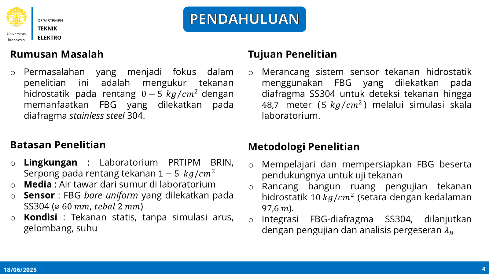
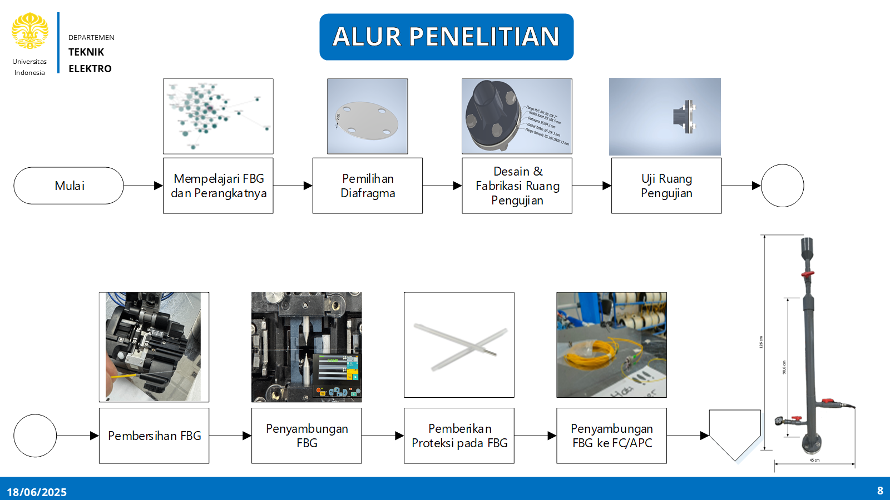
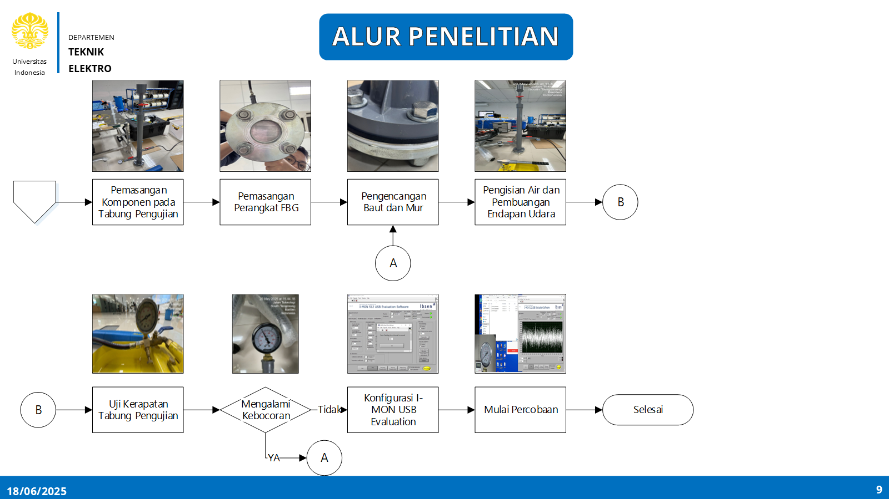
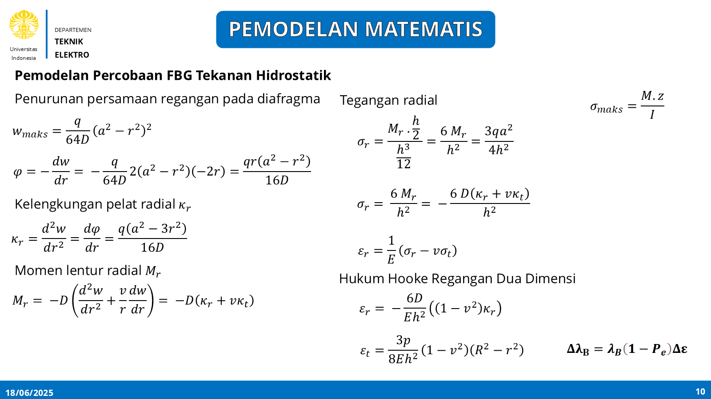

p = p0 + ρgh
Hydrostatic pressure
Water pressure increases with depth. This equation defines the pressure input that the diaphragm must convert into strain.
Undergraduate Thesis | UI and BRIN
I designed a laboratory-scale optical pressure sensing system for shallow underwater monitoring. The work combines fiber optic sensing, diaphragm mechanics, finite element simulation, and an analytical pressure-to-wavelength model.
Background
Indonesia has wide shallow coastal waters and high tsunami exposure, so underwater pressure monitoring is an important part of marine observation. Conventional electronic pressure sensors can be affected by electromagnetic interference and are less convenient for distributed sensing.
Fiber Bragg Grating (FBG) sensors offer a compact optical alternative: they are immune to electromagnetic interference, can be multiplexed along one optical fiber, and are suitable for harsh underwater environments.
What I Worked On
Methodology Screenshots
The screenshots below are selected from my thesis presentation and show only the methodology side of the work: research scope, workflow, system assembly, and mathematical modeling.




Core Equations
Water pressure increases with depth. This equation defines the pressure input that the diaphragm must convert into strain.
The reflected wavelength depends on the effective refractive index and grating period of the optical fiber.
When the diaphragm bends, strain is transferred to the FBG and shifts the reflected Bragg wavelength.
This describes how material stiffness and diaphragm thickness affect bending under pressure.
Combining diaphragm strain theory with the FBG equation links applied pressure directly to the measurable wavelength shift.
Project Scope
This page is a compact portfolio summary. It explains the sensing problem, the system I designed, and the analytical model behind it. Experimental data, detailed results, and full references are intentionally omitted from the public portfolio page.